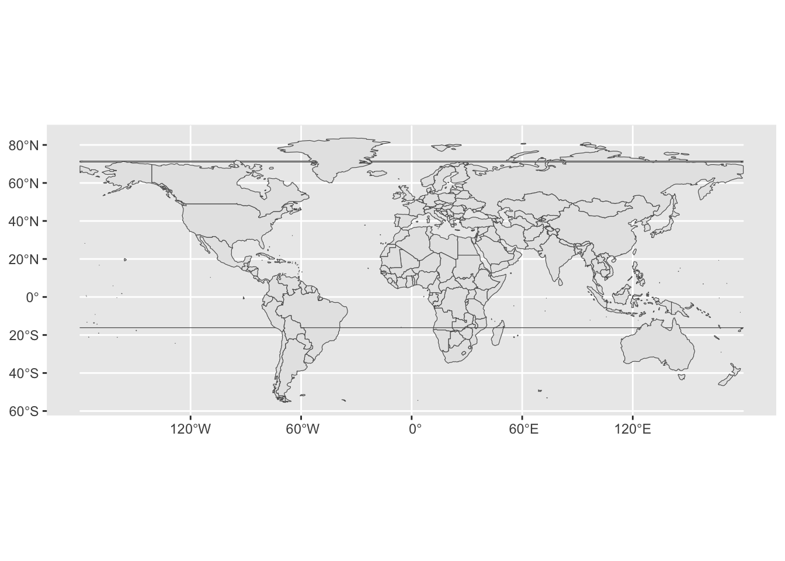
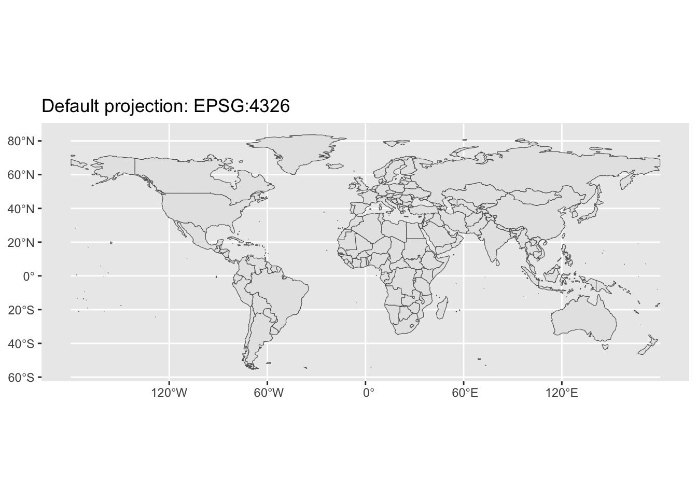
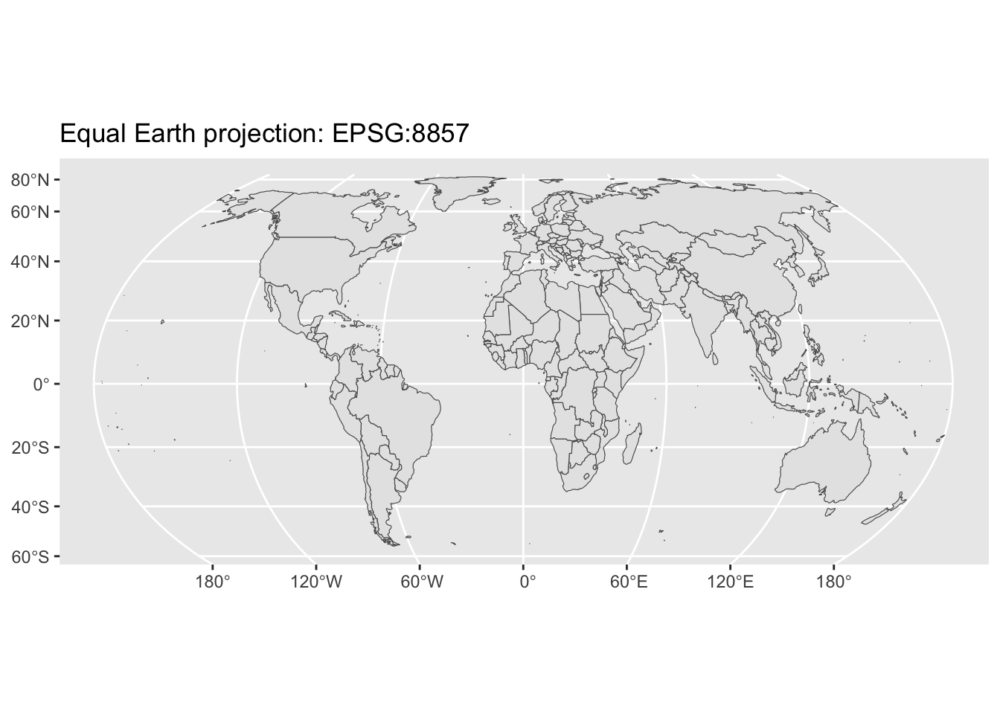
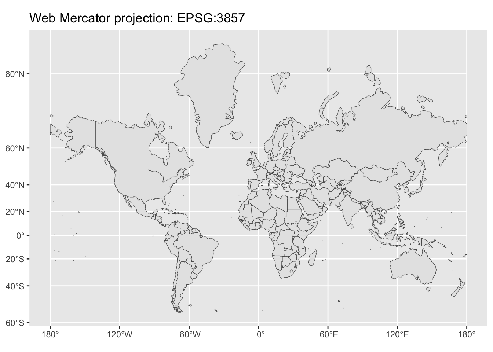
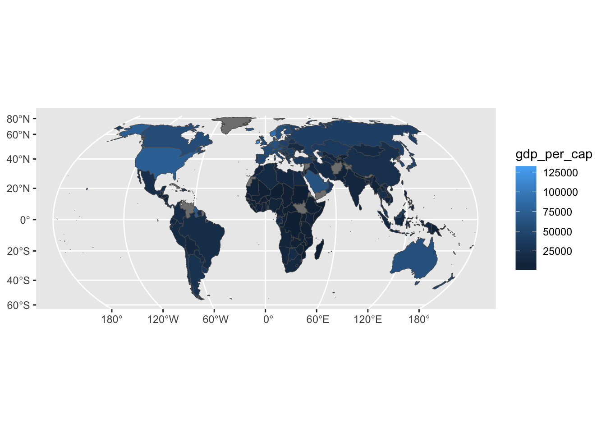
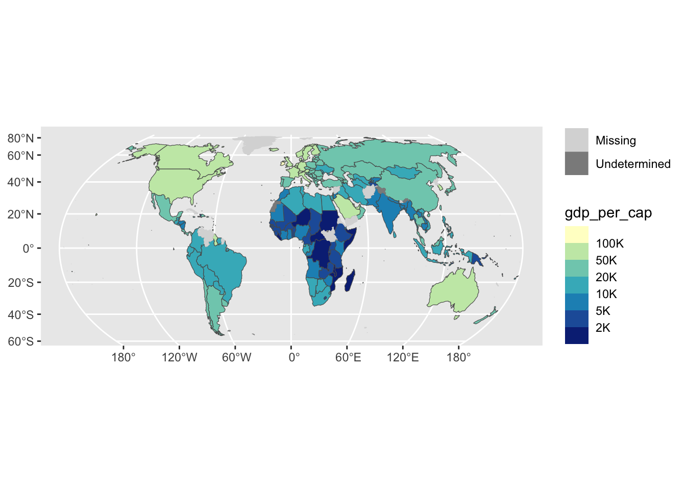
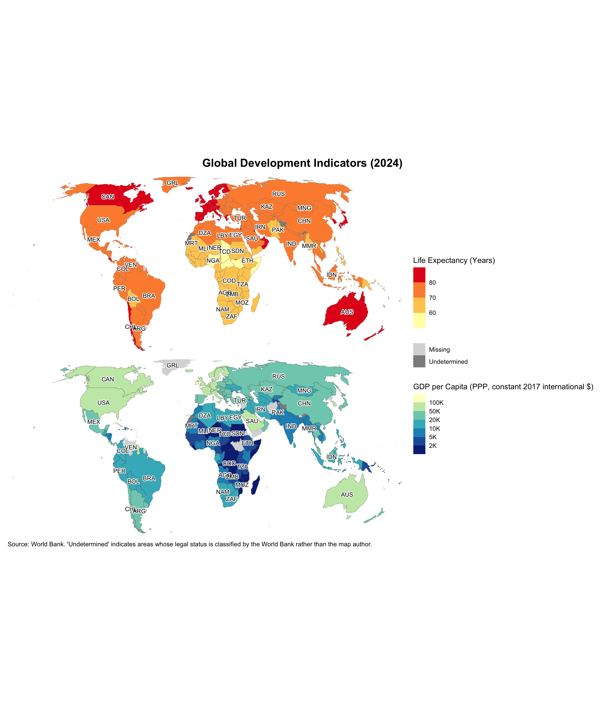

library(tidyverse)
library(mapview)
library(patchwork)
library(readxl)
library(rmapshaper)
library(scales)
library(sf)
library(shadowtext)Week 10 Lab: Choropleth Lab
3.1 Identifing Suitable Fill Variables for Choropleth Maps
| Variable | Variable type | Suitable as fill color? Why or why not? | Would the result be a choropleth map? Why or why not? |
|---|---|---|---|
| GDP per capita | Quantitative (intensive) | Yes. GDP per capita is a standardized measure that can be represented effectively using a sequential colour scale. | Yes. It is a quantitative intensive variable, making it suitable for a choropleth map. |
| Life expectancy | Quantitative (intensive) | Yes. Life expectancy is a continuous quantitative measure that can be represented with a sequential colour scale. | Yes. It is an intensive quantitative variable, so the result is a choropleth map. |
| Region | Categorical (nominal) | Yes, but only using distinct qualitative colours to distinguish categories rather than a gradient. | No. This would be a qualitative thematic (categorical) map rather than a choropleth map. |
| Population | Quantitative (extensive) | Not recommended. Population is an absolute total, so colouring countries by population may be misleading because larger countries tend to have larger populations. | No. Although quantitative, it is an extensive variable, so it is generally not considered an appropriate choropleth variable. |
3.3 Import Country Statistics
gdp_data <- read_excel(
"API_NY.GDP.PCAP.PP.KD_DS2_en_excel_v2_417139.xls",
sheet = "Data",
skip = 3
)
le_data <- read_excel(
"API_SP.DYN.LE00.IN_DS2_en_excel_v2_404463.xls",
sheet = "Data",
skip = 3
)
metadata <- read_excel(
"API_NY.GDP.PCAP.PP.KD_DS2_en_excel_v2_417139.xls",
sheet = "Metadata - Countries"
)gdp_data <- gdp_data %>%
select(
name = `Country Name`,
code = `Country Code`,
gdp_per_cap = `2024`
)
le_data <- le_data %>%
select(
name = `Country Name`,
code = `Country Code`,
life_exp = `2024`
)
metadata <- metadata |>
select(
code = `Country Code`,
region = Region
) |>
filter(!is.na(region))
country_stats <- gdp_data %>%
left_join(le_data, by = c("name", "code")) %>%
left_join(metadata, by = "code") |>
filter(!is.na(region)) %>%
select(name, code, gdp_per_cap, life_exp)
nrow(country_stats)[1] 217country_statsVerifier Task: Verify the number of rows and column names
glimpse(country_stats)Rows: 217
Columns: 4
$ name <chr> "Aruba", "Afghanistan", "Angola", "Albania", "Andorra", "U…
$ code <chr> "ABW", "AFG", "AGO", "ALB", "AND", "ARE", "ARG", "ARM", "A…
$ gdp_per_cap <dbl> 44558.929, NA, 8901.887, 21641.073, 65928.307, 69701.805, …
$ life_exp <dbl> 76.50000, 66.28900, 64.80500, 79.77600, 84.18800, 83.06900…This shows that country_stats contains 217 rows and the expected columns (name, code, gdp_per_cap, and life_exp). This confirms that only aggregate regions were removed while countries with missing indicator values were retained.
3.4 Import the Boundaries as sf Objects
country_boundaries <- st_read("WB_GAD_ADM0_complete.geojson") |>
select(
code = ISO_A3,
status = WB_STATUS
)Reading layer `WB_GAD_ADM0_complete' from data source
`/Users/gerald/Desktop/Lab-SLATEBLUE/WB_GAD_ADM0_complete.geojson'
using driver `GeoJSON'
Simple feature collection with 284 features and 11 fields
Geometry type: MULTIPOLYGON
Dimension: XY
Bounding box: xmin: -180 ymin: -59.42087 xmax: 180 ymax: 83.66508
Geodetic CRS: WGS 84country_boundariesVerifier Task: Verify Boundary Geometry and Coordinate System
class(country_boundaries)[1] "sf" "data.frame"unique(st_geometry_type(country_boundaries))[1] MULTIPOLYGON
18 Levels: GEOMETRY POINT LINESTRING POLYGON MULTIPOINT ... TRIANGLEst_is_longlat(country_boundaries)[1] TRUEThis confirms that country_boundaries is an sf object with MULTIPOLYGON geometries, and that the data are stored in longitude–latitude coordinates rather than a projected coordinate system.
3.5 Validate and Repair the Geometries
invalid_before <- country_boundaries |>
filter(!st_is_valid(geometry))
nrow(invalid_before)[1] 5country_boundaries <- country_boundaries |>
st_make_valid()invalid_after <- country_boundaries |>
filter(!st_is_valid(geometry))
nrow(invalid_after)[1] 0Verifier Task: Verify the boundary geometry after repair
dim(country_boundaries)[1] 284 3table(st_geometry_type(country_boundaries))
GEOMETRY POINT LINESTRING POLYGON
0 0 0 0
MULTIPOINT MULTILINESTRING MULTIPOLYGON GEOMETRYCOLLECTION
0 0 284 0
CIRCULARSTRING COMPOUNDCURVE CURVEPOLYGON MULTICURVE
0 0 0 0
MULTISURFACE CURVE SURFACE POLYHEDRALSURFACE
0 0 0 0
TIN TRIANGLE
0 0 This verification shows that repairing the geometries did not change the number of features or their geometry types. All geometries remain as MULTIPOLYGON, indicating that only invalid geometries were repaired.
3.6 Simplify the polygons
npts(country_boundaries)[1] 3918720sgp_before <- country_boundaries %>%
filter(code == "SGP") %>%
st_cast("POLYGON")
nrow(sgp_before)[1] 20country_boundaries <- country_boundaries %>%
ms_simplify(
keep = 10000 / npts(country_boundaries),
keep_shapes = TRUE
)sgp_after <- country_boundaries %>%
filter(code == "SGP") %>%
st_cast("POLYGON")
nrow(sgp_after)[1] 1Verifier Task: Verify Simplified Boundaries
nrow(country_boundaries)[1] 284sum(st_is_empty(country_boundaries))[1] 0sum(!st_is_valid(country_boundaries))[1] 0npts(country_boundaries)[1] 14800The simplified boundary dataset still contains all 284 features, with no empty or invalid geometries. The boundary file has been simplified to 14,800 boundary points, reducing its complexity while preserving all country features.
3.7 Cure the Antimeridian Problem
ggplot(country_boundaries) + geom_sf()
country_boundaries <- country_boundaries |>
st_wrap_dateline() |>
st_cast("MULTIPOLYGON")ggplot(country_boundaries) +
geom_sf()Verifier Task: Verify the number of rows, geometry types, and validity of the geometries after fixing the antimeridian problem
nrow(country_boundaries)[1] 284table(st_geometry_type(country_boundaries))
GEOMETRY POINT LINESTRING POLYGON
0 0 0 0
MULTIPOINT MULTILINESTRING MULTIPOLYGON GEOMETRYCOLLECTION
0 0 284 0
CIRCULARSTRING COMPOUNDCURVE CURVEPOLYGON MULTICURVE
0 0 0 0
MULTISURFACE CURVE SURFACE POLYHEDRALSURFACE
0 0 0 0
TIN TRIANGLE
0 0 sum(!st_is_valid(country_boundaries))[1] 0The verification confirms that fixing the antimeridian problem did not change the number of features or geometry types, and no invalid geometries were introduced. The rendering artefact across the Pacific Ocean was successfully removed.
3.9 Join the Statistics to the Boundaries
countries <- country_boundaries |>
left_join(country_stats, by = "code")
countriesVerifier Task: Verify Statistics Join
# Check unmatched codes from country_stats
anti_join(
country_stats,
country_boundaries %>% st_drop_geometry(),
by = "code"
)# Confirm countries is an sf object
class(countries)[1] "sf" "tbl_df" "tbl" "data.frame"# Confirm 264 features
nrow(countries)[1] 264# Confirm the country_stats columns are included
colnames(countries)[1] "code" "status" "geometry" "name" "gdp_per_cap"
[6] "life_exp" The verification shows that only the Channel Islands did not find a matching boundary, as expected. The resulting countries object is an sf object containing 264 features with the statistical columns successfully joined.
3.10 Compare Map Projections
ggplot(countries) +
geom_sf() +
labs(title = "Default projection: EPSG:4326")
ggplot(countries) +
geom_sf() +
coord_sf(crs = "EPSG:8857") +
labs(title = "Equal Earth projection: EPSG:8857")
ggplot(countries) +
geom_sf() +
coord_sf(crs = "EPSG:3857") +
labs(title = "Web Mercator projection: EPSG:3857")
Discuss the differences with your team. Which projection is the best choice for a global choropleth map, and why? Justify your choice, referring to area distortion, shape distortion, and the interpretability of the graticule.
The default EPSG:4326 map is easy to understand because it uses longitude and latitude directly, but it distorts areas nearer to the poles. The Web Mercator projection makes this distortion even stronger, causing high-latitude regions such as Greenland and northern Russia to appear much larger than they really are.
The Equal Earth projection is the best choice for a global choropleth map because it is an equal-area projection. This means country areas are represented more fairly, which is important when comparing shaded regions on a world map. Although shapes are slightly distorted, the overall world shape and graticule remain easy to interpret.
3.11 Draft a first choropleth map
ggplot(countries) +
geom_sf(aes(fill = gdp_per_cap)) +
coord_sf(crs = "EPSG:8857")
3.12 Distinguish Data, Missing Values, and Undetermined Areas
ggplot() +
geom_sf(
data = countries |> filter(!is.na(gdp_per_cap)),
aes(fill = gdp_per_cap)
) +
geom_sf(
data = countries |>
filter(is.na(gdp_per_cap), status != "Non-determined legal status area"),
aes(colour = "Missing"),
fill = "grey85"
) +
geom_sf(
data = countries |> filter(status == "Non-determined legal status area"),
aes(colour = "Undetermined"),
fill = "grey55"
) +
scale_fill_fermenter(
palette = "YlGnBu",
breaks = c(2000, 5000, 10000, 20000, 50000, 100000),
labels = label_number(scale_cut = cut_short_scale())
) +
scale_colour_manual(
values = c("Missing" = "grey85", "Undetermined" = "grey55"),
name = NULL
) +
coord_sf(crs = "EPSG:8857")
3.13 Build the Two-Panel Choropleth Map
#Identify the 40 largest countries by land area for labeling
largest_countries <- countries |>
mutate(area = st_area(geometry)) |>
slice_max(area, n = 40) |>
st_point_on_surface()
# Life Expectancy plot
le_plot <- ggplot() +
geom_sf(
data = countries |> filter(!is.na(life_exp)),
aes(fill = life_exp),
color = "grey50",
size = 0.1
) +
geom_sf(
data = countries |>
filter(is.na(life_exp), status != "Non-determined legal status area"),
aes(color = "Missing"),
fill = "grey85",
size = 0.1
) +
geom_sf(
data = countries |> filter(status == "Non-determined legal status area"),
aes(color = "Undetermined"),
fill = "grey55",
size = 0.1
) +
geom_shadowtext(
data = largest_countries,
aes(label = code, geometry = geometry),
stat = "sf_coordinates",
color = "black",
bg.color = "white",
bg.r = 0.15,
size = 3
) +
scale_fill_fermenter(
palette = "YlOrRd",
name = "Life Expectancy (Years)",
direction = 1
) +
scale_color_manual(
values = c("Missing" = "grey85", "Undetermined" = "grey55"),
name = NULL
) +
coord_sf(
crs = "EPSG:8857",
ylim = c(-56, 84),
default_crs = "EPSG:4326",
label_graticule = "",
expand = FALSE
) +
theme_minimal() +
theme(
plot.title = element_text(hjust = 0.5, face = "bold"),
panel.background = element_rect(fill = "white", color = NA),
panel.border = element_blank(),
panel.grid = element_blank(),
axis.title = element_blank(),
axis.text = element_blank(),
axis.ticks = element_blank()
)
# GDP Per Capita at bottom of our chart
gdp_plot <- ggplot() +
geom_sf(
data = countries |> filter(!is.na(gdp_per_cap)),
aes(fill = gdp_per_cap),
color = "grey30",
size = 0.1
) +
geom_sf(
data = countries |>
filter(is.na(gdp_per_cap), status != "Non-determined legal status area"),
aes(color = "Missing"),
fill = "grey85",
size = 0.1
) +
geom_sf(
data = countries |> filter(status == "Non-determined legal status area"),
aes(color = "Undetermined"),
fill = "grey55",
size = 0.1
) +
geom_shadowtext(
data = largest_countries,
aes(label = code, geometry = geometry),
stat = "sf_coordinates",
color = "black",
bg.color = "white",
bg.r = 0.15,
size = 3
) +
scale_fill_fermenter(
palette = "YlGnBu",
breaks = c(2000, 5000, 10000, 20000, 50000, 100000),
labels = label_number(scale_cut = cut_short_scale()),
name = "GDP per Capita (PPP, constant 2017 international $)"
) +
scale_color_manual(
values = c("Missing" = "grey85", "Undetermined" = "grey55"),
name = NULL
) +
coord_sf(
crs = "EPSG:8857",
ylim = c(-56, 84),
default_crs = "EPSG:4326",
label_graticule = "",
expand = FALSE
) +
theme_minimal() +
theme(
panel.background = element_rect(fill = "white", color = NA),
panel.border = element_blank(),
panel.grid = element_blank(),
axis.title = element_blank(),
axis.text = element_blank(),
axis.ticks = element_blank()
)
le_plot /
gdp_plot +
plot_layout(guides = "collect") +
plot_annotation(
title = "Global Development Indicators (2024)",
caption = "Source: World Bank. 'Undetermined' indicates areas whose legal status is classified by the World Bank rather than the map author.",
theme = theme(
plot.title = element_text(size = 16, face = "bold", hjust = 0.5),
plot.caption = element_text(size = 9, hjust = 0)
)
)
Verifier Task: Final Figure Checklist
| Checklist item | Requirement | Evidence in code | Result |
|---|---|---|---|
| Layout | Life expectancy above GDP per capita. | le_plot / gdp_plot |
Achieved |
| Map projection | Equal Earth projection for both maps. | coord_sf(crs = "EPSG:8857") |
Achieved |
| Clipping | Maps clipped to 56°S–84°N. | ylim = c(-56, 84) |
Achieved |
| Colour palettes | Suitable sequential ColorBrewer palettes. | YlOrRd, YlGnBu |
Achieved |
| Missing & undetermined areas | Separate grey fills with legend entries. | grey85, grey55 |
Achieved |
| Country borders | Thin borders distinguish neighbouring countries. | color = "grey50" / color = "grey30", size = 0.1 |
Achieved |
| Legend scales | Appropriate ranges, breaks, and labels. | breaks, label_number() |
Achieved |
| Legend placement | Horizontal legends above each map with the legend title serving as the map title. | plot_layout(guides = "collect") |
Design choice: Collected vertical legends were used on the right to improve readability and make better use of space while preserving all required information. |
| Country labels | 40 largest countries labelled with a white halo. | slice_max() + geom_shadowtext() |
Achieved |
| Title | Bold title includes the year. | "Global Development Indicators (2024)" |
Achieved |
| Caption | Credits the World Bank and defines “Undetermined”. | plot_annotation(caption = ...) |
Achieved |
| Background & frame | Light blue globe background with a white outer background. | panel.background = element_rect(fill = "white") |
Design choice: A simplified white background was used to reduce non-data ink and improve emphasis on the mapped data. |
| Theme | Reduce non-data ink. | theme_minimal() with axes and gridlines removed |
Achieved |
| Figure dimensions | Maps and labels remain clearly legible. | fig-width = 12, fig-height = 14 |
Achieved |
The final figure satisfies the key design requirements of the lab, including the Equal Earth projection, clipped map extent, suitable ColorBrewer palettes, country labels, and separate visualization of missing and undetermined areas. Vertical legends were intentionally used instead of horizontal legends because they improve readability and make better use of the available space while preserving all required information. As stated in the lab instructions, Figure 1.2 is only one possible result, and additional adjustments that enhance the quality of the visualization are encouraged.
3.14 Reflect on Visualization
The choropleth maps allow readers to identify geographical patterns in life expectancy and GDP per capita. For example, countries in North America, Western Europe, and Oceania generally have higher life expectancy and GDP per capita, while many countries in Africa have lower values for both indicators. The maps also make it easy to compare neighbouring countries and identify regional trends.
Compared to the Preston-curve plot, the choropleth maps allow us to clearly see which countries have the higher Life Expectency and GDP per capita based on their regions on a map, however, we cannot compare any relation between the 2 using this plot. In a Preston-curve plot, we are able to see the correlation between the 2, Life expectency and GDP per capita plotted on the x and y axis, with this, we are able to spot outliers, lacking/perfomring countries based on the plotted mean weighted line.
4 Completing the Submission
4.1 Reflect on AI Use
Our team used ChatGPT to help us understand concepts, troubleshoot R code, and clarify how geospatial functions such as st_make_valid(), st_wrap_dateline(), ms_simplify(), anti_join(), and coord_sf() work. It also provided guidance on projection comparisons and verifier tasks, helping us better understand the purpose of each step before implementing our own solution.
We did not accept every AI suggestion directly. For example, ChatGPT suggested using horizontal legends, but after reviewing the lab instructions and discussing as a team, we chose vertical legends because we found them clearer and easier to read. This showed us the importance of evaluating AI suggestions instead of accepting them without review.
4.2 Team Roles and Contributions
Jia Jia served as the Coder and was responsible for creating and maintaining the main .qmd file, importing the datasets, and ensuring that the document rendered successfully.
Jun Kiat acted as the Navigator by guiding the team’s progress, interpreting the task requirements, and ensuring that all sections were completed.
Gerald took on the role of Verifier and carried out the required validation checks, including data verification, join checks, scale verification, and legend checks.
Bao Quan served as the Constructive Critic and Reporter by reviewing the team’s explanations, improving the clarity of written responses, and preparing explanations for the team’s plotting decisions.
Adam acted as the AI Liaison by interacting with the chosen AI tool, maintaining the AI interaction log, and evaluating AI suggestions before they were incorporated into the submission.